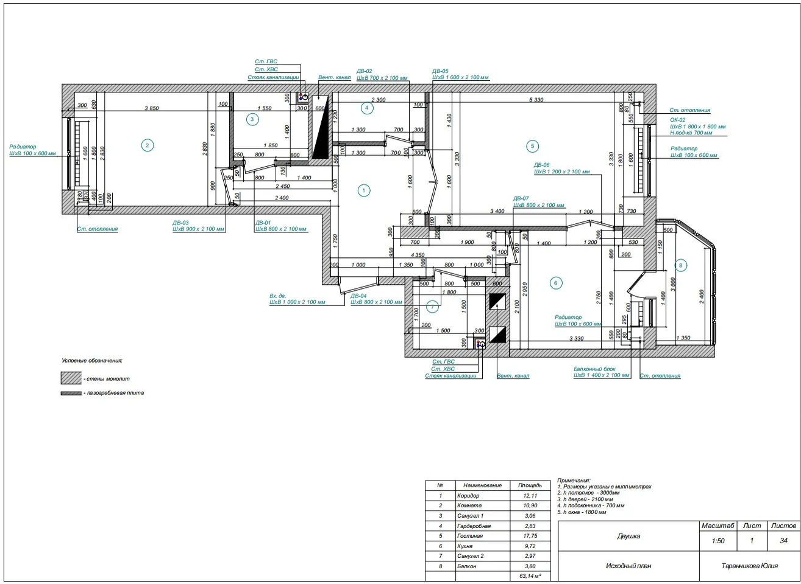
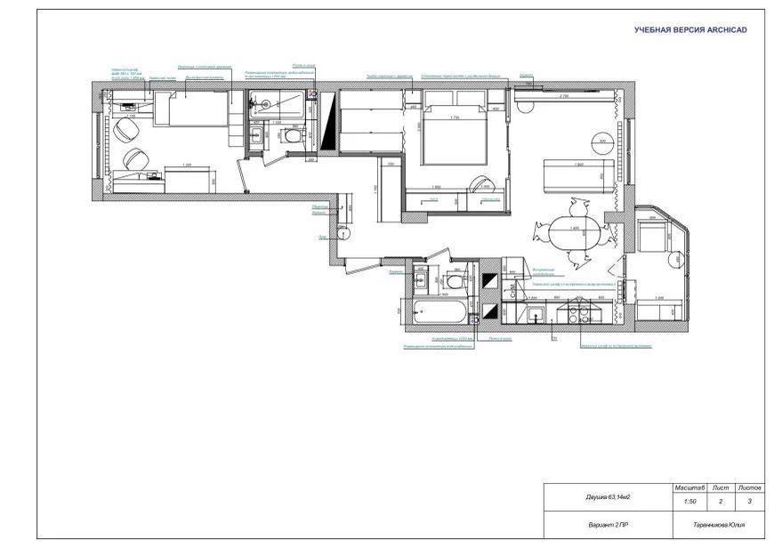
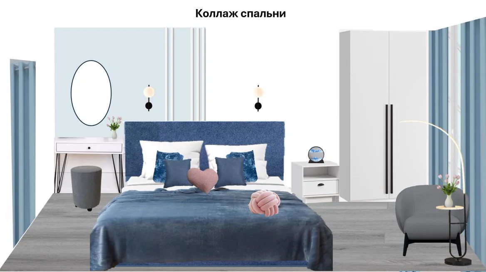
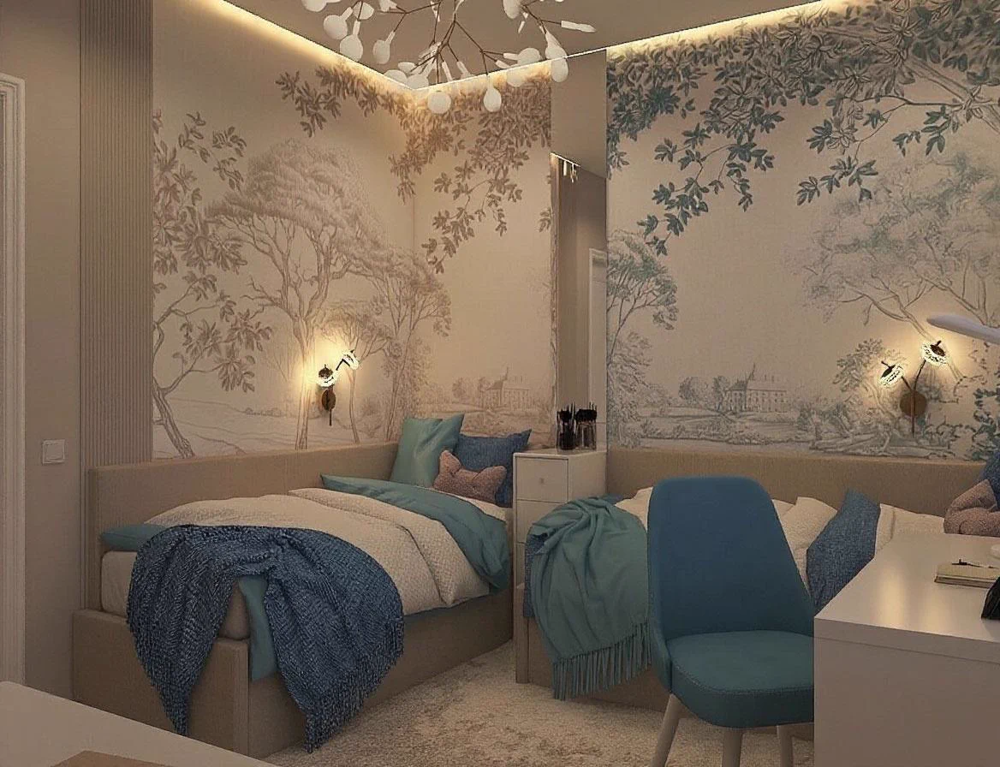
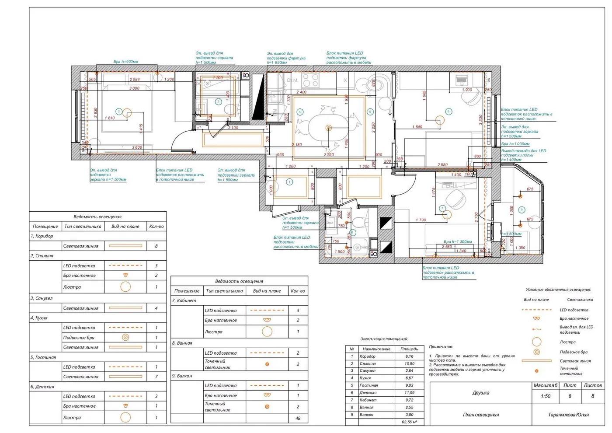
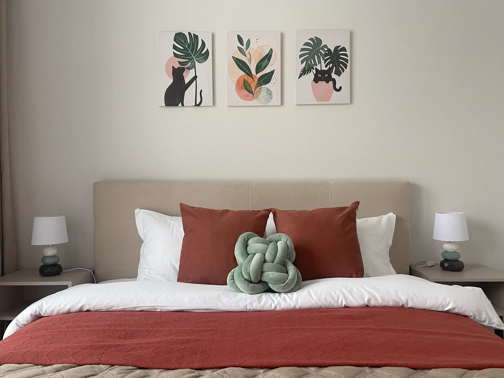
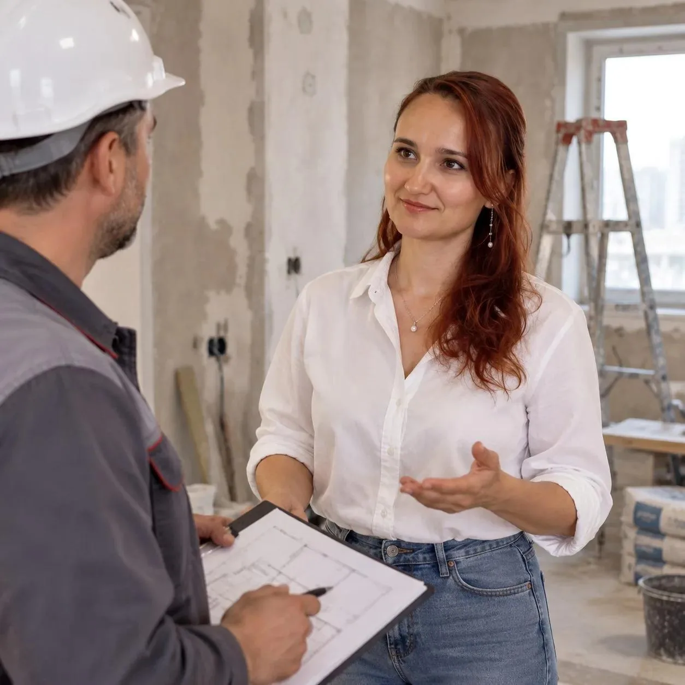

Процесс
Этапы дизайн-проекта
Семь этапов — от первой онлайн-встречи до авторского сопровождения на объекте. С примерами по каждому этапу из портфолио.
-
Этап 1
Обмер помещения и первая консультация
На онлайн-встрече: обсудим Ваши пожелания и оформим техническое задание. После подписания ТЗ, приеду на объект и сделаю все необходимые замеры.
Результат — исходный план с точными размерами

-
Этап 2
Планировочное решение с расстановкой мебели
- 2-3 варианта плана расстановки мебели и сантехнического оборудования с доработкой выбранного варианта;
- План демонтируемых конструкций и возводимых конструкций;
- План квартиры после перепланировки с экспликацией помещений.

-
Этап 3
Коллажи
- Выбор стиля с помощью подборки фотографий и визуализаций в желаемом стиле
- Подбор предметов мебели и элементов декора для каждой комнаты.

-
Этап 4
Визуализации
- Фотореалистичные 3D-изображения интерьера на основе плана расстановки мебели и согласованного ТЗ (техническое задание).
- До 3 ракурсов на 1 комнату.
- Разные сценарии освещения

-
Этап 5
Рабочая документация
- План с исходными размерами
- Планировочное решение
- Новый обмерный план
- Планы монтажных и демонтажных работ
- План дверей и кондиционеров
- План сантехнического оборудования
- План расстановки осветительного оборудования
- План привязки выключателей
- План розеток и эл. выводов
- План теплых полов
- Планы напольных покрытий, отделки стен и потолочных конструкций
- Планы плинтусов и карнизов
- Развертки стен по главным помещениям
- Спецификация материалов, электрики, освещения, мебели и сантехники с артикулами и количеством

-
Этап 6
Комплектация интерьера
- Спецификация мебели, освещения и сантехнического оборудования
- Консультация по закупкам предметов мебели и декора

-
Этап 7
Авторское сопровождение
- Регулярные выезды автора проекта на объект;
- Контроль соответствия проводимых работ дизайн-проекту;
- Общение с прорабом на объекте;
- Консультации по всем предоставленным чертежам.

Начнём с первого этапа?
Ваше время — ваши деньги. Я экономлю и то, и другое. Напишите — и я помогу пройти ремонт с минимальными затратами во времени и силах.